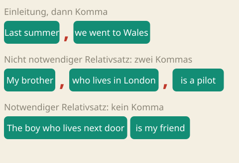

Wann steht ein Komma?
Mit einem KI-Tutor lernen
Ein KI-Tutor erklärt dir diese Seite und hilft dir bei den Aufgaben. Wähl deinen Assistenten:
Mit Claude öffnen Mit ChatGPT öffnen Mit Mistral Vibe öffnen
Du nutzt dein eigenes Konto beim Anbieter. Der Assistent ist kein Angebot von lernapps.net: lernapps liefert nur Inhalte und Aufgaben. Die Wahl gilt für alle Seiten, nur auf diesem Gerät.
Mr Hill liest Sophies Blog
Die Blogeinträge der Klasse werden auf Kommas geprüft. Du kennst nicht notwendige Relativsätze aus der Wiederholung: Man kann sie weglassen, ohne dass sich ändert, wer gemeint ist.
Aufgabe
Lösung
My aunt, who lives in Leeds, is a nurse. richtige Antwort
Der Relativsatz gibt nur eine Zusatzinformation.
The woman who lives next door is a nurse.
Ohne ihn weiß man nicht, welche Frau gemeint ist.
A girl who speaks French joined our class.
Er sagt, welches Mädchen kam.
Ein nicht notwendiger Relativsatz steht zwischen Kommas.
Das kannst du danach: Du setzt Kommas im Englischen nach den Regeln und erkennst, wann kein Komma steht.
Der Blog
| Englisch | Deutsch |
|---|---|
| host mother | Gastmutter |
| pancakes | Pfannkuchen |
| honestly | ehrlich gesagt |
| strange | seltsam, ungewohnt |
My first term in Millbrook
On Monday, I wrote my first test in English. Honestly, it was easier than I thought!
At first, everything in Millbrook felt strange. The buses are red, the milk comes in bottles and people say sorry all the time.
My host mother, Mrs Parker, who makes the best pancakes in town, helped me a lot. Her son Peter, who is nine, shows me the way to school every morning.
In my class, I sit next to Ellie, who is also my host sister. The teacher who teaches us English is Mr Hill. He says that my English gets better every week.
Last Friday, we had a school party with music, games and lots of cake. After the party, we cleaned the classroom together.
Now, I really like it here.
Aufgabe
Lösung
Peter, Mrs Parkers Sohn richtige Antwort
Im Blog zeigt Peter den Weg.
Ellie, ihre Gastschwester
Ellie sitzt in Sophies Klasse.
Mr Hill, der Lehrer
Mr Hill unterrichtet Englisch.
Peter, Mrs Parkers Sohn, zeigt Sophie den Weg.
Aufgabe
Lösung
Last Friday, we had a school party with music, games and lots of cake. richtige Antwort
Nach Last Friday steht ein Komma.
Her son Peter, who is nine, shows me the way to school every morning.
Die Kommas stehen um den Relativsatz.
The teacher who teaches us English is Mr Hill.
Hier steht gar kein Komma.
Nur der Satz mit Last Friday beginnt mit einer Einleitung und einem Komma.
Ein Komma ist eine Pause
Ein Komma zeigt eine kleine Pause, die man auch hört. Das Bild zeigt drei Sätze in Karten. Ein rotes Komma steht dort, wo man kurz Luft holt.

Ein Komma steht nach einer Einleitung und um einen nicht notwendigen Relativsatz. Im dritten Satz gibt es keine Pause.
Quelle: eigene Zeichnung. Lizenz: CC-BY-4.0.Merke
- Nach einer Einleitung am Satzanfang steht meist ein Komma: Zeit, Ort oder ein Wort wie now. Nach ganz kurzen Einleitungen ist es freiwillig.
- Nicht notwendiger Relativsatz: ein Komma davor und eines danach. Notwendiger Relativsatz: keine Kommas.
- In einer Aufzählung stehen Kommas zwischen den Gliedern, aber im britischen Englisch meist nicht vor and.
- Vor einem that-Satz steht im Englischen kein Komma, anders als im Deutschen.
Übung
Aufgabe
Setze die fehlenden Kommas. Schreibe den ganzen Satz.
Tipp
Wo holst du beim Vorlesen kurz Luft?
- On a rainy day in October we visited my grandmother.
- My dog who is very old sleeps all day.
- She has apples pears and oranges.
Lösung
- On a rainy day in October, we visited my grandmother.
- My dog, who is very old, sleeps all day.
- She has apples, pears and oranges.
Aufgabe
Lösung
The girl who won the race is my cousin. richtige Antwort
Er sagt, welches Mädchen gemeint ist.
The girl, who won the race, is my cousin.
Mit Kommas wäre er nur eine Zusatzinformation.
The girl who won the race, is my cousin.
Ein einzelnes Komma trennt Subjekt und Verb.
Ein notwendiger Relativsatz steht ohne Kommas.
Aufgabe
Höre zu und schreibe jeden Satz ganz auf. Setze die Kommas.
Tipp
Höre den Satz so oft, wie du willst.
- KI
- KI
Lösung
- After the long lesson, Peter plays football in the garden.
- My teacher, who is very kind, helps us today.
Dein Blog
Offene Aufgabe
Schreibe fünf englische Sätze für einen Blog über deine Schule. Verwende eine Einleitung am Satzanfang, einen nicht notwendigen Relativsatz und eine Aufzählung. Schreibe danach in zwei Sätzen auf Deutsch: Sind die englischen Kommaregeln für dich leichter oder schwerer als die deutschen? Begründe.
Tipp
Prüfe jeden Satz auf Pausen.
Eine gute Antwort enthält:
Lösung
Every morning, I walk to school. My friend Tom, who lives next door, comes with me. In the canteen, we have pasta, salad and fruit. After lunch, we play football. On Fridays, my class goes swimming. Im Deutschen steht vor jedem dass-Satz ein Komma. Im Englischen nicht, darum finde ich die englischen Regeln leichter.
Rückblick und nächster Schritt
Die Kommas in Sophies Blog stimmen jetzt. In diesem Kapitel hast du Laute und Schrift verbunden und Kommas gesetzt. Im nächsten Kapitel geht es um Betonung, Rhythmus und Melodie.
Fehler gefunden oder eine Idee für diese App?